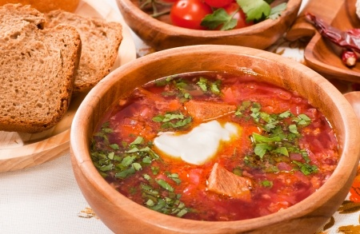
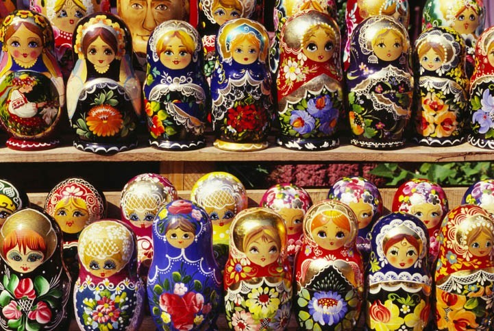

BORTSCH FAIT MAISON

Le Bortsch est un plat traditionnel russe qui se sert généralement en hiver. Il s'agit d'un soupe chaude et consistante à base de chou qui s'accompagne avec du pain et de la vodka !

INGREDIENTS POUR 4 PERSONNES
- 400 g de chou vert
- 2 tomates
- 2 branches de celeri
- 300/400g Bettrave rouge (pre cuit)
- 1 Poireau
- 1 oignon
- 3 gousses d’ail
- 1 citron bio (à raper et à presser)
- Sel, poivre et piment
- 1kg de blanquette de veau
- 500g de patates
PREPARATION
- Dans le pot, mettre de l’huile d’olive, faire dorer la viande.
- Rajouter le chou découpé, les pommes de terre en dé et les tomates en dés.
- Mettre tous les ingrédients, couper le poireau et rajouter 1 L d’eau.
- Ajouter des feuilles de laurier et du curcumain.
- Cuisson mini 1h.